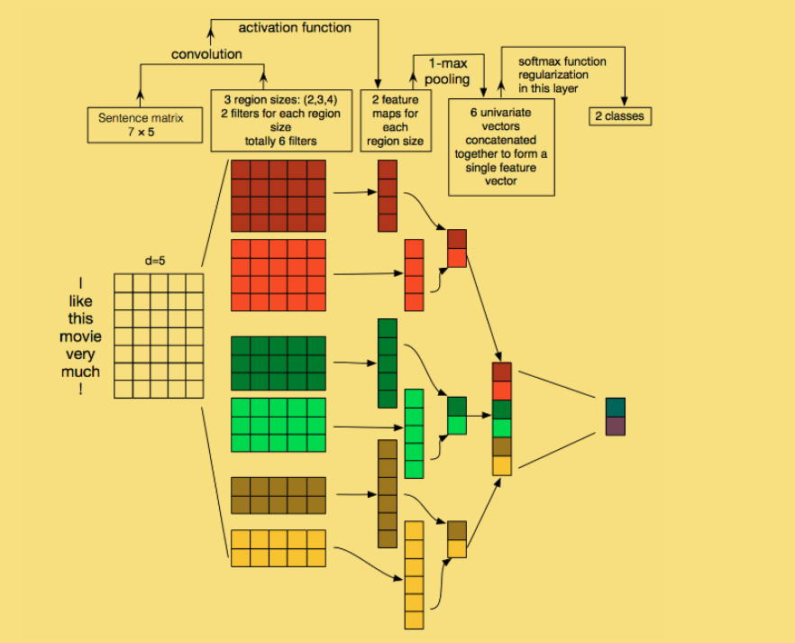

TextCnn
1 | import numpy as np |
数据加载
数据集采用THUCNEWS，和预处理的embedding
- class.text, test.txt, train.txt 2. embedding_SougouNew.npz
1 | train_file_path = "THUCNews/data/train.txt" |
- 现在开始处理数据，我们采用以字为单位的方式来进行处理
- 以字为单位分割， 并且统计每一个字出现的个数。可以去除出现次数非常少的字（min_freq）,确定vocab的最大长度（max_size）
- 生成一个 字 与 id 的map 相互一一映射(tokenizer 切割方式)
- 生成与源文本与之对应的 id 数值
- 保证没一段文本的长度固定，字数超过就切断，如果字数不够 则加 PAD
- 如果到字表中没有的字 则一律采用一个标志 UNK 来表示
（PAD 和 UNK 实际上都是对应着一个向量） - 使用DataLoader在训练的时候进行批次加载
1 | # 生成一个 字 与 id 的map 相互一一映射(tokenizer 切割方式) |
1 | # get_vocab(train_file_path, 10000, 1) |
{“如”： 213} -> 213 embedding [1.24, 2.1, 3.5, 2.52,…… 12.3, 0.234]
{““：4762} -> 4762 embedding [3.04, 3.3, 1.5, 0.52,…… 2.13, 0.341]
1 | # 生成与源文本与之对应的 id 数值 |
1 | #load_dataset(train_file_path) |
（[“我”, “爱”, “中”, “国”，”,”…….. “美”， “好”，“
”，“ ”]， 类型，总的长度）
（[132, 3, 32, 44, 24,……, 32, 213, 4403, 4403 ] ， 3， 30）
1 | # 产生train dev 和 test 数据集合（由id组成，并与文字一一对应） |
1 | # build_dataset() |
1 | # 产生batch_data即就是将所有数据封装成对象， 再训练的时候一个批次一个批次的取 |
1 | def build_iterator(dataset, batch_size): |
构建模型

1 | batch_size = 128 # 批次大小 |
1 | # 加载与训练好的embedding 数组 |
为了方便查看网络结构所以我把所有参数定义在上面， 然后再网络结构中 直接写相关的数（不用变量，方便读者查看）
- 首先是embedding的向量 对图中每一行
- convs是3种不同尺寸的filter（每一种的个数可以是多个一般是2的指数）
- 将通过卷积运算的数据通过激活函数relu
- max_pool1d的工作是取得当前的卷积运中的最大值，然后将相同尺寸的max_pool结果拼接起来。 然后再由将不同尺寸max_pool后的结果拼接起来
- 将拼接好的结果通过dropout 防止过拟合
- 通过fc网络得每一种分类的得分
1 | class Model(nn.Module): |
网络的训练
- 权重的初始化
1 | # 权重初始化， 使用xavier |
- 训练
- 训练的模型 在上文已经定义
- 训练的数据集 通过DatasetIterater批量加载数据
- 优化的方法 使用Adam
- 使用交叉熵损失函数
1 | def train(model, train_iter, dev_iter, test_iter): |
1 | def test(model, test_iter): |
1 | def evaluate(model, data_iter, test = False): |
运行
1 | def run(): |
1 | run() |
Loading data...
180000it [00:02, 70878.90it/s]
10000it [00:00, 69477.66it/s]
10000it [00:00, 72506.85it/s]
+++++++++++++++++++++++++++++++++
<__main__.DatasetIterater object at 0x000001E8F73248D0>
<__main__.DatasetIterater object at 0x000001E8F73248D0>
<__main__.DatasetIterater object at 0x000001E8F73248D0>
Loading data Complete, Using time 2.84836745262146
<bound method Module.parameters of Model(
(embedding): Embedding(4762, 300)
(convs): ModuleList(
(0): Conv2d(1, 2, kernel_size=(2, 300), stride=(1, 1))
(1): Conv2d(1, 2, kernel_size=(3, 300), stride=(1, 1))
(2): Conv2d(1, 2, kernel_size=(4, 300), stride=(1, 1))
)
(dropout): Dropout(p=0.5)
(fc): Linear(in_features=6, out_features=10, bias=True)
)>
Epoch [1/20]
Iter: 0, Train Loss: 2.4, Train Acc: 10.94%, Val Loss: 2.3, Val Acc: 11.67%, Time: 4.347041845321655 *
Iter: 100, Train Loss: 2.0, Train Acc: 21.88%, Val Loss: 2.0, Val Acc: 38.10%, Time: 31.06502628326416 *
Iter: 200, Train Loss: 1.9, Train Acc: 28.12%, Val Loss: 1.8, Val Acc: 48.73%, Time: 56.15272235870361 *
Iter: 300, Train Loss: 1.7, Train Acc: 35.16%, Val Loss: 1.6, Val Acc: 56.35%, Time: 81.23346781730652 *
Iter: 400, Train Loss: 1.8, Train Acc: 35.94%, Val Loss: 1.6, Val Acc: 60.44%, Time: 106.87457942962646 *
Iter: 500, Train Loss: 1.7, Train Acc: 35.16%, Val Loss: 1.5, Val
...........
Epoch [6/20]
Iter: 7100, Train Loss: 1.6, Train Acc: 46.09%, Val Loss: 1.1, Val Acc: 72.51%, Time: 1965.9722084999084
Iter: 7200, Train Loss: 1.5, Train Acc: 46.09%, Val Loss: 1.1, Val Acc: 72.92%, Time: 1993.864845275879
Iter: 7300, Train Loss: 1.6, Train Acc: 41.41%, Val Loss: 1.1, Val Acc: 72.55%, Time: 2020.9455888271332
Iter: 7400, Train Loss: 1.4, Train Acc: 47.66%, Val Loss: 1.1, Val Acc: 72.65%, Time: 2047.5681087970734
Iter: 7500, Train Loss: 1.8, Train Acc: 36.72%, Val Loss: 1.1, Val Acc: 72.65%, Time: 2077.9685645103455
No improve, auto-stoppping
Test Loss: 1.1, Test Acc: 74.40%
Precision, Recall and F1-Score...
precision recall f1-score support
finance 0.8488 0.7750 0.8102 1000
realty 0.8516 0.7690 0.8082 1000
stocks 0.7146 0.6610 0.6868 1000
education 0.9013 0.8580 0.8791 1000
science 0.6545 0.6290 0.6415 1000
society 0.7890 0.6620 0.7200 1000
politics 0.4792 0.7620 0.5884 1000
sports 0.8064 0.8330 0.8195 1000
game 0.8377 0.7590 0.7964 1000
entertainment 0.7485 0.7320 0.7401 1000
micro avg 0.7440 0.7440 0.7440 10000
macro avg 0.7632 0.7440 0.7490 10000
weighted avg 0.7632 0.7440 0.7490 10000
Confusion Matrix...
[[775 9 92 10 16 3 54 35 2 4]
[ 11 769 15 12 48 5 86 7 1 46]
[ 85 14 661 1 64 2 150 17 6 0]
[ 5 20 4 858 2 29 65 0 2 15]
[ 14 22 106 7 629 12 112 17 54 27]
[ 4 16 5 39 11 662 211 15 10 27]
[ 10 20 22 18 31 85 762 29 3 20]
[ 7 1 7 2 15 12 55 833 2 66]
[ 1 4 12 3 123 3 32 22 759 41]
[ 1 28 1 2 22 26 63 58 67 732]
参考资料：
Convolutional Neural Networks for Sentence Classification